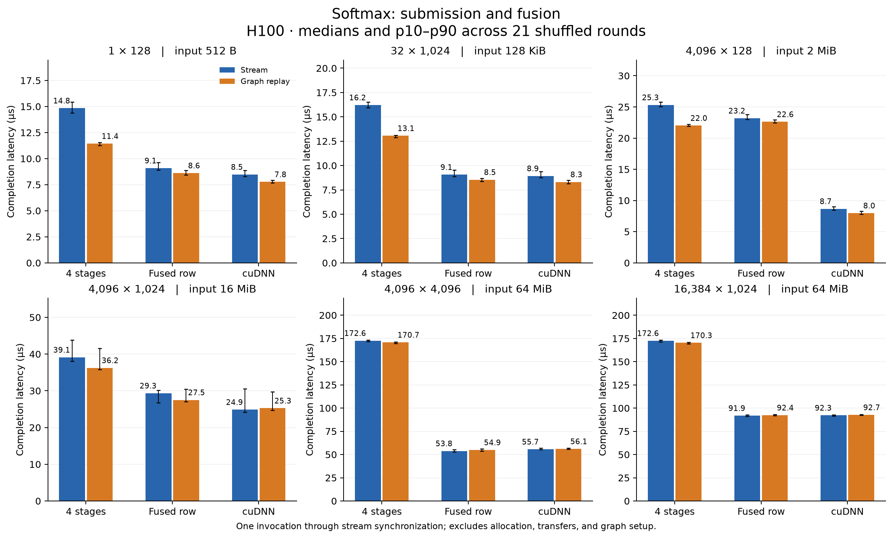
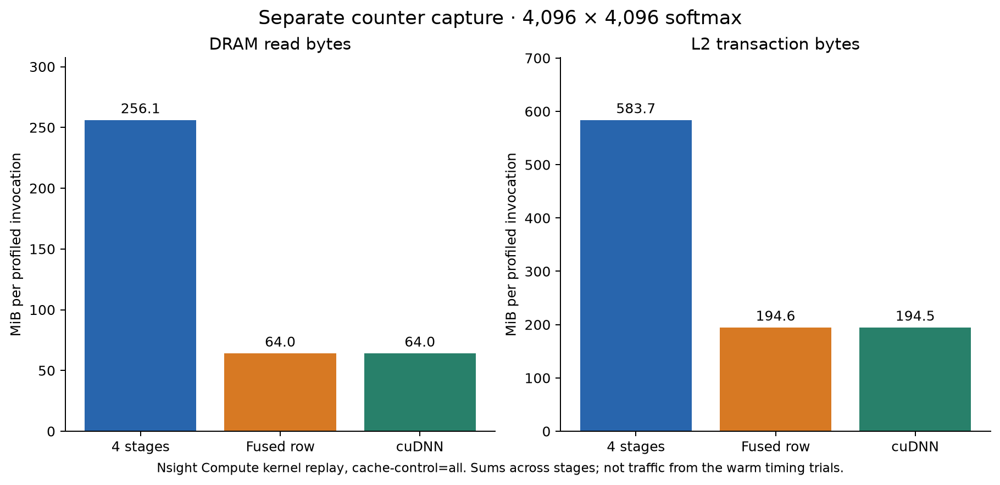
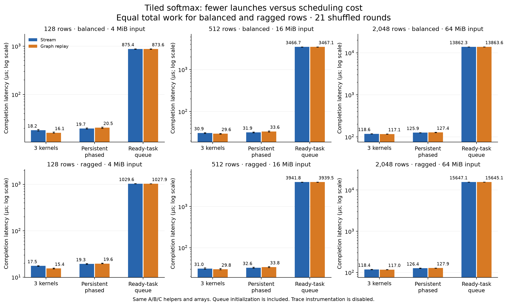
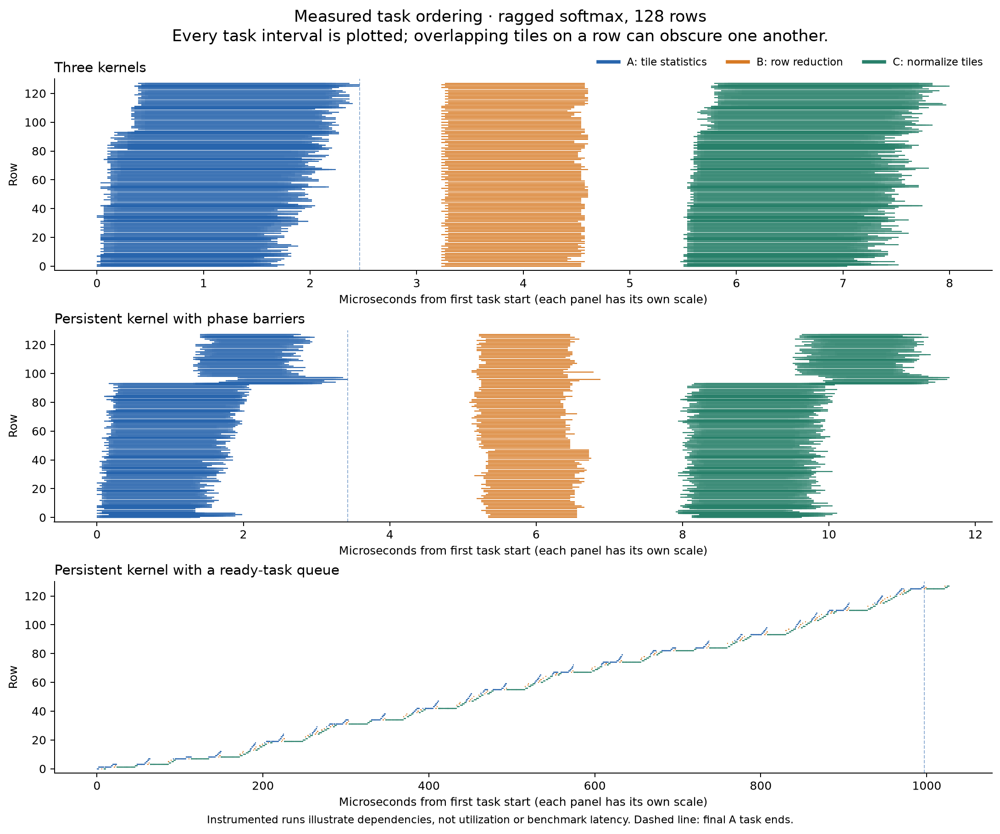

Historical two-example experiment. The current article uses the single RMS-scaled softmax workload.
Run 20261019T175825Z, measured October 19, 2026. These are research results for the unpublished article; its original February 22 date is unchanged.
The article's new four-way figures use these same raw samples. In the full-sweep figures below, 4 stages / Stream (row example) and 3 kernels / Stream (tiled example) are the ordinary-launch baselines. Fusion and megakernel-style scheduling are complementary to graph replay, not successive guaranteed speedups.
Evaluation
Use row softmax as the main worked example. It has meaningful reductions and temporary arrays, a recognizable purpose, and a cuDNN reference. The old pointwise example remains a valid minimal sanity check. Repeated float32(...) casts are not the mechanism being illustrated: specify FP32 arithmetic once, then explain the operations.
The tiled example adds real cross-block fan-in and fan-out, equal-total-work balanced/ragged cases, and a persistent control with full phase barriers. It removes the earlier artificial occupancy reservation. Its centralized ready-task queue is a deliberately small runtime demonstration and is unsuitable as evidence that an optimized model-scale megakernel would be faster. The measured queue implementation is much slower. A hand-written MLP would introduce GEMM/Tensor Core implementation quality before cleanly separating these mechanisms.
H100 is sufficient
The run used an NVIDIA H100 80GB HBM3, compute capability 9.0, 132 SMs, and 50 MiB L2. CUDA compilation, graph capture/replay, cooperative grids, device atomics, and both profiler captures succeeded. The largest input is 64 MiB; capacity is ample, and that input exceeds this device's L2 size. No Blackwell-specific feature is required. H100! prevented Modal's automatic H200 upgrade. Modal GPU selection, Hopper guide.
Row softmax: a benefit beyond replay
Compute m = max(x), e = exp(x-m), z = sum(e), and y = e/z for each row. Compare four explicit kernels, one fused row kernel, and cuDNN accurate softmax. Each is tested with stream calls and graph replay; observed graph kernel counts are 4, 1, and 1 respectively.
All table entries are median host completion latency in µs, from submission through stream synchronization. There are 21 shuffled rounds per variant. Allocation, transfers, graph setup, validation, and profiling are excluded. Graph setup and first replay are recorded separately.
Scroll horizontally to see the full table.
| Rows × columns | Staged stream | Staged graph | Fused graph | cuDNN graph |
|---|---|---|---|---|
| 1 × 128 | 14.84 | 11.44 | 8.62 | 7.77 |
| 32 × 1,024 | 16.21 | 13.06 | 8.54 | 8.31 |
| 4,096 × 128 | 25.32 | 22.01 | 22.61 | 7.98 |
| 4,096 × 1,024 | 39.11 | 36.25 | 27.51 | 25.27 |
| 4,096 × 4,096 | 172.60 | 170.75 | 54.93 | 56.08 |
| 16,384 × 1,024 | 172.60 | 170.34 | 92.39 | 92.74 |
At 4,096 × 4,096, replay changes the staged median from 172.60 to 170.75 µs; the fused graph takes 54.93 µs, close to cuDNN's 56.08 µs. Fusion changes kernel count and intermediate storage together, so these timings do not isolate either contribution.
The narrow-row case is equally important: at 4,096 × 128, our fused graph takes 22.61 µs versus cuDNN's 7.98 µs. This generic fused kernel is not a shape-tuned library implementation. Its recorded 53 registers/thread and four resident blocks/SM differ from the separate kernels' resources; the timings alone do not establish the cause of the performance gap. No local memory was reported for the custom kernels.

The separate Nsight Compute capture recorded approximately 256 MiB DRAM reads for the four stages versus 64 MiB for fusion. It uses kernel replay with cache-control=all; these are counter measurements under that policy, not traffic measurements from the warm latency trials. They must not be used to derive warm-run bandwidth or attribute all of the speedup to HBM traffic.

Tiled softmax: earlier consumers can still lose
A computes each tile's maximum and shifted exponential sum. B combines all tile summaries for one row. C normalizes that row's tiles. A/B/C use the same helpers and global intermediates in all implementations.
Balanced rows contain 8,192 elements. Ragged rows contain one 36,864-element row and seven 4,096-element rows per eight, with a seeded permutation. Thus both distributions have the same number of elements, tiles, and row tasks. Workers prefer ready B/C tasks and claim new A tiles when the queue is empty. This consumer preference was chosen before GPU execution; no measured result informed it.
The persistent variants use the same compiled kernel and 792 workers. The phased version retains cooperative grid barriers. The queue version uses acquire/release publication, producer counters, and exact completion counts. Queue initialization is included in its measurements: graph kernel counts are 3 separate, 1 phased, and 2 queued. These controls expose costs, but do not isolate atomics, worker assignment, resource allocation, and cache effects individually.
Scroll horizontally to see the full table.
| Rows | Distribution | Separate graph | Phased persistent graph | Ready-task queue graph |
|---|---|---|---|---|
| 128 | balanced | 16.09 | 20.53 | 873.57 |
| 128 | ragged | 15.37 | 19.62 | 1027.87 |
| 512 | balanced | 29.62 | 33.64 | 3467.07 |
| 512 | ragged | 29.75 | 33.84 | 3939.48 |
| 2,048 | balanced | 117.14 | 127.38 | 13863.57 |
| 2,048 | ragged | 116.98 | 127.89 | 15645.09 |
For the ragged 128-row graph trace (fixture 2), 126 of 128 B tasks and 980 of 1,024 C tasks began before the last A task ended. Every B still waited for its own A producers, and every C waited for its B. Separate and phased variants had no such early starts. Yet uninstrumented completion was 15.37 µs separate, 19.62 µs phased, and 1,027.87 µs queued. Earlier readiness is not enough to pay for this runtime. This is a negative result about this implementation and workload, not a result about megakernels in general.


Each timeline panel has its own time scale. It shows all task intervals, including overlapping tiles on a row; it is not an SM-utilization chart. Trace instrumentation is disabled in timing runs. Traced and untraced persistent builds both used 792 workers in this run.
Validation and measurement limits
- 360 saved outputs passed independent FP64 stable-softmax references, finite/nonnegative checks, and row-sum checks; 768 intermediate arrays also passed. Tolerances were fixed before execution:
abs(error) <= 1e-7 + 2e-5 * abs(reference), and row sums within2e-5of one. Maximum observed output error was5.43e-7, rounded upward. - All stream/graph pairs were bitwise equal. All scheduling variants were also bitwise equal to one another. Fixtures changed input values while graph pointers stayed fixed; the
(7,781)case checked masking. - Compute Sanitizer memcheck passed for row and DAG cases; synccheck passed for the DAG case. All 24 traces / 52,224 task intervals passed coverage, visit-count, and dependency-order checks.
- 1,512 variant timing records, plus 252 empty-synchronization baselines, retain raw samples. Each record includes single completion, batch enqueue/completion, and event interval measurements. Baselines are not subtracted. Event intervals can include host-starvation gaps.
- Two Nsight Systems reports each contained 12 kernel intervals, including six graph-node intervals. Five Nsight Compute reports contained the expected 4/1/1 row kernels and 3/2 tiled kernels. CSV units were explicitly exported in base units. The installed Compute version writes
.ncu-repz; offline exports are preserved separately. - These are results from one H100 allocation. Clocks were recorded rather than locked; host completion depends on the host/runtime environment. Quantile bars describe these repeated samples, not population confidence intervals. The GPU function elapsed time was 507 seconds, including validation and artifact writes.
Files and reproduction
- Protocol, captured CUDA source, independent analyzer, configuration.
- All timing summaries, trace validation, figure provenance, complete run summary.
- Profiler exports and source hashes, raw artifact manifest.
- Four figures are available as PNG and SVG. Raw timings, trace CSVs, graph DOTs, compiler logs, PTX/SASS, hardware/library metadata, inputs, outputs, and original profiler captures are retained.
The raw run contains 1,741 hashed files / 9.37 GB in Modal Volume cuda-graphs-softmax-evidence, directory /20261019T175825Z/. The compact local review explicitly lists omitted large arrays. The profiler-export supplement has its own manifest. Full data are retained remotely because local free disk space is smaller than the archive.
From the repository root, .venv-modal/bin/modal run experiments/graphs_softmax/modal_app.py repeats the bounded GPU experiment. profile_exports.py --run-id 20261019T175825Z exports existing profiler captures on CPU; analyze.py PATH --review verifies a review bundle; report.py PATH regenerates figures and tables from raw samples. The postprocessing fix for compressed Nsight reports did not change any GPU kernel, timing, or validation result.